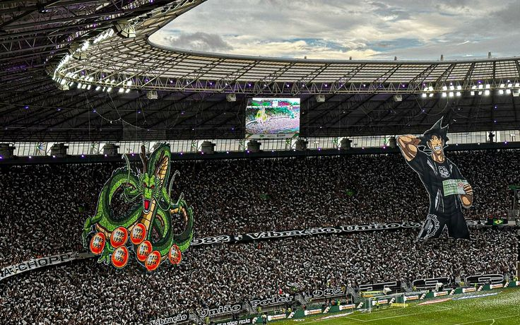
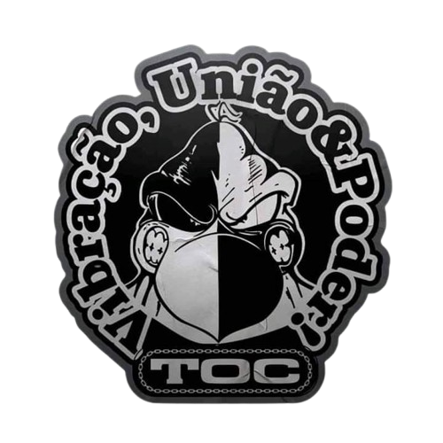

História da Torcida Organizada Cearamor
A Cearamor, principal torcida organizada do Ceará Sporting Club, tem uma trajetória de mais de 40 anos dedicada ao apoio incondicional ao "Vozão". Fundada em 26 de outubro de 1982, a torcida nasceu do desejo de um grupo de apaixonados pelo clube que queriam demonstrar seu amor de forma organizada e intensa. Ao longo dos anos, a Cearamor cresceu, tornando-se uma das maiores e mais respeitadas torcidas organizadas do Brasil.
Fundação e Primeiros Passos
Nos anos 80, o futebol cearense passava por mudanças e a paixão dos torcedores pelo Ceará crescia cada vez mais. Inspirados por outras torcidas organizadas do país, um grupo de amigos decidiu fundar uma torcida que representasse de maneira mais vibrante o amor pelo clube. Assim, no dia 26 de outubro de 1982, nasceu a Cearamor, com o objetivo de incentivar o time em qualquer circunstância, dentro e fora dos estádios. Nos primeiros anos, a torcida era composta por um número pequeno, mas fiel, de torcedores. Ainda sem uma grande estrutura, os primeiros materiais como bandeiras e faixas eram confeccionados artesanalmente e levados aos jogos para apoiar o time. Com o tempo, o número de integrantes cresceu e a presença da Cearamor nas arquibancadas se tornou cada vez mais notável.
Crescimento e Reestruturação nos Anos 90
Na década de 1990, a Cearamor passou por uma reestruturação que mudou o rumo da torcida. Até então, a organização funcionava de maneira informal, mas a crescente adesão de novos membros exigiu uma gestão mais profissional. Com a nova estrutura, a torcida conseguiu arrecadar recursos para melhorar sua infraestrutura, criando materiais próprios, organizando festas nas arquibancadas e expandindo sua presença nos estádios. Nesse período, a Cearamor se consolidou como a principal torcida organizada do Ceará Sporting Club, tornando-se peça fundamental no apoio ao time. A relação entre a torcida e o clube também se fortaleceu, com a Cearamor se tornando uma extensão da identidade do Vozão. Esse apoio fervoroso começou a ser reconhecido em todo o país, e a torcida passou a ser referência em organização e paixão pelo clube.
Durante décadas, a Cearamor foi liderada por Maurição, um dos responsáveis pelo crescimento e profissionalização da torcida. Em 2006, no entanto, ele decidiu deixar o cargo por motivos pessoais, passando o comando para Jey, que já fazia parte da diretoria da torcida. A nova liderança trouxe diversas inovações para a Cearamor. Entre elas, destaca-se a criação de uma nova sede social em 2007, que contava com bar, academia, lan house e loja de produtos personalizados. Além disso, a torcida lançou o famoso "Gigante Negro", um bandeirão de 40 metros de largura por 12,40 metros de altura, que se tornou um dos maiores do Nordeste. Outra mudança importante foi a ampliação da estrutura de caravanas, permitindo que um número maior de torcedores pudesse viajar para apoiar o Ceará em jogos fora de casa.
A torcida também começou a se envolver em ações sociais, promovendo campanhas de arrecadação de alimentos, doação de brinquedos para crianças carentes e eventos beneficentes. Esse engajamento fortaleceu a imagem da Cearamor não apenas como uma torcida organizada, mas como uma entidade que busca contribuir positivamente para a sociedade.